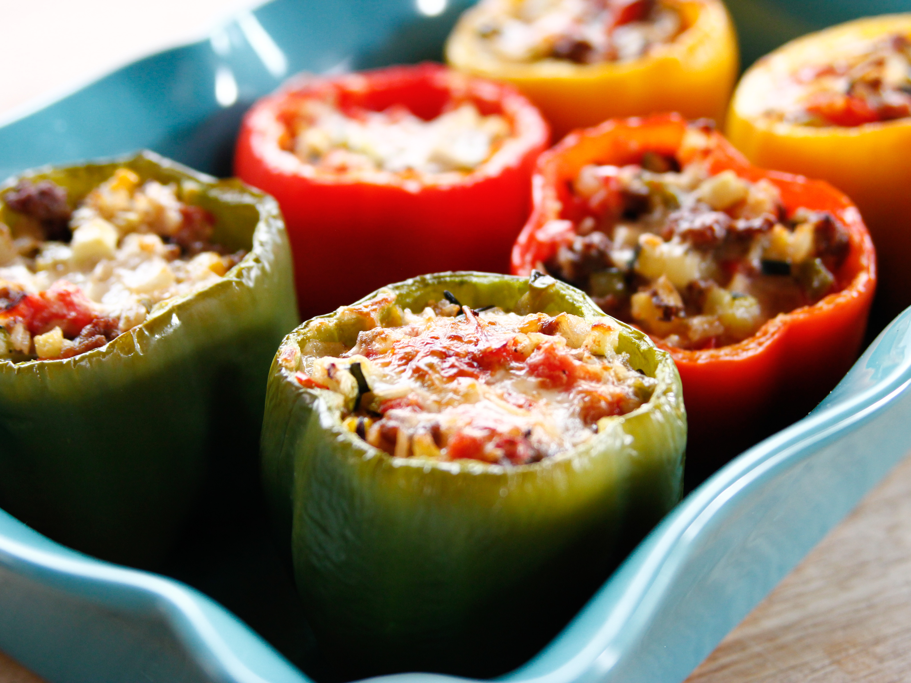

Stuffed Bell Peppers

Yummy stuffed bell peppers
For this recipe you'll be making some yummy stuffed bell peppers! It's a very easy recipe that takes 1 hr 35 min.
Ingredients
- 6 bell peppers, any color
- 4 tablespoons olive oil, plus more for drizzle
- 8 ounces lean ground beef
- Kosher salt and freshly ground black pepper
- 1 onion, finely diced
- 2 cloves garlic, chopped
- 1 medium zucchini, finely diced
- 4 roma tomatoes, seeded and finely diced
- Red pepper flakes as needed
- 1 cup cooked long -grain and wild rice
- 1 1/2 cups grated pepper jack cheese
Steps
- Preheat the oven to 350 degrees F.
- Cut the tops off the peppers. Remove and discard the stems, then finely chop the tops; set aside. Scoop out the seeds and as much of the membrane as you can. Place the peppers cut-side up in a baking dish just large enough to hold them upright.
- Heat 2 tablespoons of the olive oil in a large skillet over medium-high heat. Add the beef, season with salt and pepper and cook, breaking up the lumps, until the meat is cooked through and just beginning to brown, 8 to 10 minutes. Remove to a paper towel-lined plate to get rid of the fat.
- Wipe out the skillet and add the remaining 2 tablespoons olive oil. Add the onions and chopped peppers and cook until beginning to soften, 3 to 4 minutes. Add the garlic and zucchini and cook for another minute. Add the tomatoes and season with salt and a pinch or 2 of red pepper flakes. Cook until everything is heated through, then stir in the beef and rice. Taste and adjust the seasoning. Stir in 1 cup of the cheese.
- Fill the peppers with the rice mixture and top each with a sprinkle of the remaining 1/2 cup cheese. Pour a small amount of water into the bottom of the baking dish and drizzle the peppers with a little olive oil. Cover with foil and bake for 30 minutes. Uncover and bake until the peppers are soft and the cheese is melted and lightly browned, another 15 to 20 minutes.